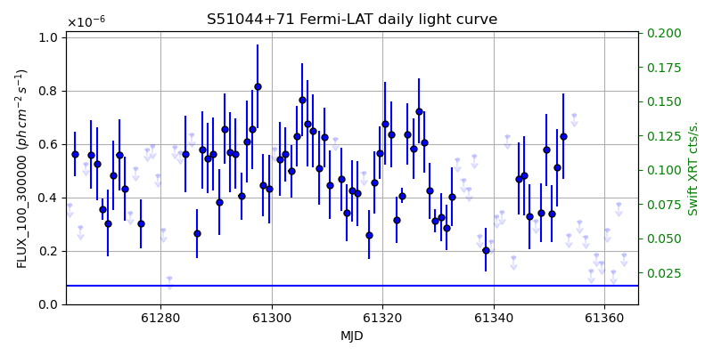

LAT Lightcurve site: https://fermi.gsfc.nasa.gov/ssc/data/access/lat/msl_lc/source/S5_1044p71
Swift site: https://www.swift.psu.edu/monitoring/source.php?source=S51044+71
NED: Query
Time of last update of this page: UT: 2026-11-20 16:22 (MJD: 61364.682)
| Property | Value |
|---|---|
| R.A. | 10:48:27.60 |
| Dec. | 71:43:37.2 |
| z | 1.150 |
| 3FGL SpectrumType | PowerLaw |
| 3FGL PL Index | 2.39 |
| 3FGL Flux_100_300000 | 6.90e-08 1 / (s cm2) |
| 3FGL Flux_1000_300000 | 2.80e-09 1 / (s cm2) |
| 3FGL Flux >200 GeV | 1.75e-12 1 / (s cm2) |
| 3FGL Extrap. Crab >200 GeV | 0.01 |
| 3FGL Flux After EBL Absorption >200GeV | 1.38e-14 1 / (s cm2) |
| 3FGL EBL Crab Fraction >200GeV | 0.00 |

| MJD | dMJD | Flux | dFlux | Frac3FGL | FracCrab>200GeV | EBLFracCrab>200GeV |
|---|---|---|---|---|---|---|
| 61359.50 | 0.50 | 1.57e-07 | 0.00e+00 | 0.00 | 0.00 | 0.00 |
| 61360.50 | 0.50 | 2.79e-07 | 0.00e+00 | 0.00 | 0.00 | 0.00 |
| 61361.50 | 0.50 | 1.23e-07 | 0.00e+00 | 0.00 | 0.00 | 0.00 |
| 61362.50 | 0.50 | 3.75e-07 | 0.00e+00 | 0.00 | 0.00 | 0.00 |
| 61363.50 | 0.50 | 1.87e-07 | 0.00e+00 | 0.00 | 0.00 | 0.00 |
| MJD | dMJD | Flux | dFlux | Frac3FGL | FracCrab>200GeV | EBLFracCrab>200GeV |
|---|---|---|---|---|---|---|
| 61328.50 | 3.50 | 4.64e-07 | 3.89e-08 | 6.73 | 0.05 | 0.00 |
| 61335.50 | 3.50 | 1.40e-07 | 6.79e-08 | 2.03 | 0.02 | 0.00 |
| 61342.50 | 3.50 | 2.50e-07 | 4.07e-08 | 3.62 | 0.03 | 0.00 |
| 61349.50 | 3.50 | 3.74e-07 | 4.70e-08 | 5.42 | 0.04 | 0.00 |
| 61356.50 | 3.50 | 1.05e-07 | 3.16e-08 | 1.53 | 0.01 | 0.00 |

| MJD | dMJD | Flux | dFlux | Frac3FGL | FracCrab>200GeV | EBLFracCrab>200GeV |
|---|---|---|---|---|---|---|
| 61359.50 | 0.50 | 5.14e-08 | 0.00e+00 | 0.00 | 0.00 | 0.00 |
| 61360.50 | 0.50 | 1.29e-08 | 0.00e+00 | 0.00 | 0.00 | 0.00 |
| 61361.50 | 0.50 | 3.05e-08 | 0.00e+00 | 0.00 | 0.00 | 0.00 |
| 61362.50 | 0.50 | 3.22e-08 | 0.00e+00 | 0.00 | 0.00 | 0.00 |
| 61363.50 | 0.50 | 2.33e-08 | 0.00e+00 | 0.00 | 0.00 | 0.00 |

| MJD | dMJD | Flux | dFlux | Frac3FGL | FracCrab>200GeV | EBLFracCrab>200GeV |
|---|---|---|---|---|---|---|
| 61328.50 | 3.50 | 1.55e-08 | 3.56e-09 | 5.54 | 0.04 | 0.00 |
| 61335.50 | 3.50 | 1.17e-08 | 0.00e+00 | 0.00 | 0.00 | 0.00 |
| 61342.50 | 3.50 | 1.91e-08 | 4.89e-09 | 6.86 | 0.05 | 0.00 |
| 61349.50 | 3.50 | 1.28e-08 | 4.50e-09 | 4.58 | 0.03 | 0.00 |
| 61356.50 | 3.50 | 9.92e-09 | 0.00e+00 | 0.00 | 0.00 | 0.00 |
--------------------------------------------------------- Using user-supplied coords: 10:48:27.60 71:43:37.2 2000 --------------------------------------------------------- FLWO UT night of: 2026-11-21 Local Sid. @ Midnight: 03:37 Sunset (-15.0) (local, UT): 18:33 01:33 Sunrise (-15.0) (local, UT): 05:47 12:47 Moonrise (local, UT): Moonset (local, UT): 03:40 10:40 Moon phase: 0.85 --------------------------------------------------------- AzTime LSID UT Obj_el Obj_az Mn_el Mn_az Sep. --------------------------------------------------------- 18:33 22:09 01:33 13.6 356.7 47.9 117.4 99.2 19:03 22:39 02:03 13.3 359.1 53.3 125.0 99.1 19:33 23:09 02:33 13.4 1.5 58.2 134.7 98.9 20:03 23:39 03:03 13.7 3.9 62.3 146.9 98.8 20:33 00:09 03:33 14.2 6.3 65.1 162.1 98.6 21:03 00:39 04:03 15.1 8.6 66.3 179.7 98.4 21:33 01:09 04:33 16.2 10.8 65.4 197.5 98.3 22:03 01:39 05:03 17.5 12.9 62.9 213.2 98.2 22:33 02:09 05:33 19.0 14.8 59.0 225.9 98.0 23:03 02:39 06:03 20.7 16.5 54.2 235.9 97.9 23:33 03:09 06:33 22.6 18.0 48.9 243.9 97.7 00:03 03:39 07:03 24.7 19.4 43.2 250.4 97.6 00:33 04:10 07:33 26.8 20.4 37.3 255.9 97.4 01:03 04:40 08:03 29.1 21.2 31.2 260.7 97.3 01:33 05:10 08:33 31.5 21.6 25.1 265.1 97.1 02:03 05:40 09:03 33.8 21.8 19.0 269.2 97.0 02:33 06:10 09:33 36.2 21.6 12.9 273.0 96.9 03:03 06:40 10:03 38.5 21.0 6.8 276.9 96.7 03:33 07:10 10:33 40.8 20.0 1.0 280.7 96.6 04:03 07:40 11:03 42.9 18.5 -4.9 284.7 96.4 04:33 08:10 11:33 44.8 16.6 -11.1 288.8 96.3 05:03 08:40 12:03 46.5 14.2 -16.8 293.2 96.1 05:33 09:10 12:33 47.9 11.4 -22.3 298.1 95.9 05:47 09:25 12:47 48.5 10.0 -24.8 300.5 95.9 --------------------------------------------------------- Source never above horizon of 55.0 deg. Dark hours >55 deg.: 0.00